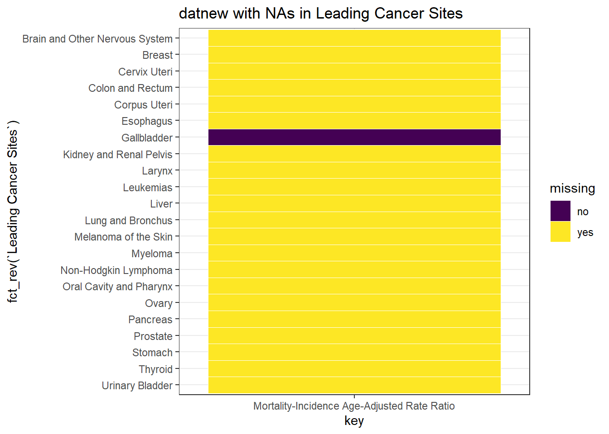
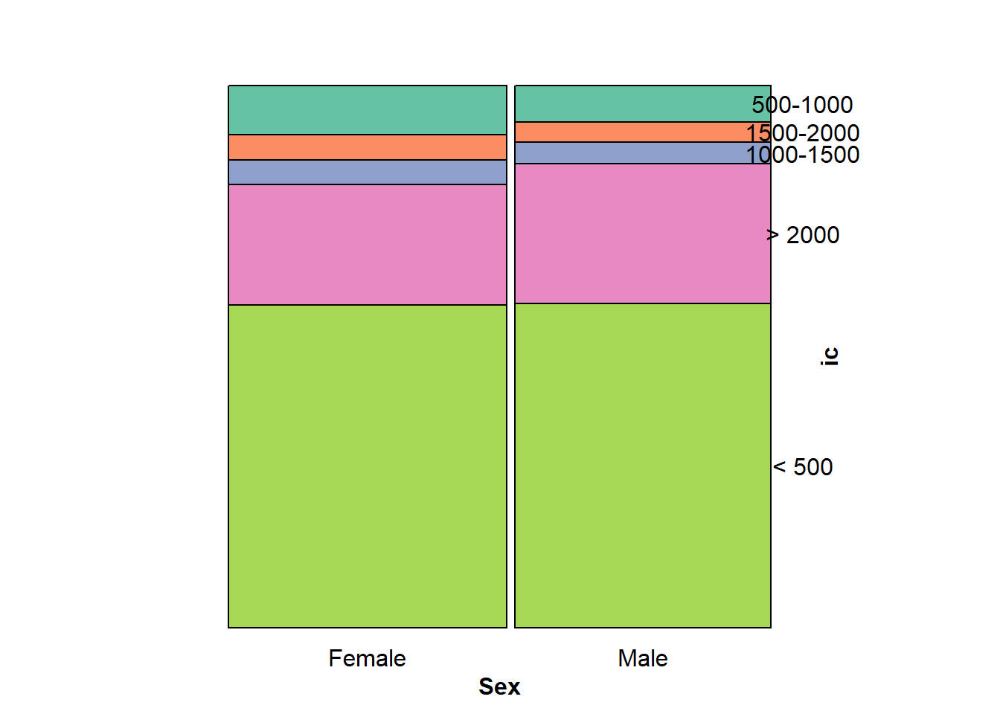
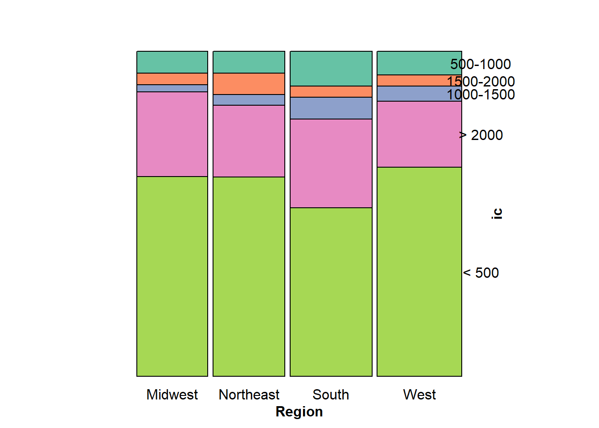
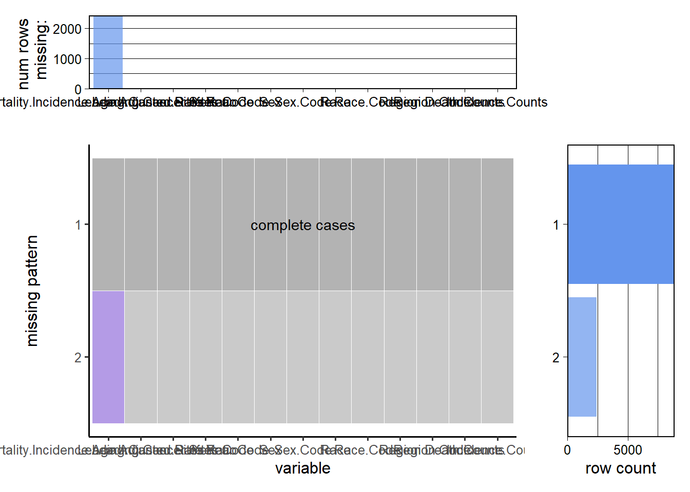

Chapter 4 Missing values
We can observe missing value from many different aspects. First of all, the missing values of top 10 rows is following:
## [1] 1 1 1 1 1 1 1 1 1 1Since in our data, there is only one variable contains NA(Mortality-Incidence Age-Adjusted Rate Ratio), the output of the row sum of NA is 1.
The missing values by column is following:
## Mortality-Incidence Age-Adjusted Rate Ratio
## 2341
## Leading Cancer Sites
## 0
## Leading Cancer Sites Code
## 0
## Year
## 0
## Year Code
## 0
## Sex
## 0
## Sex Code
## 0
## Race
## 0
## Race Code
## 0
## Region
## 0
## Region Code
## 0
## Death Counts
## 0
## Incidence Counts
## 0There are 2429 NAs in Mortality-Incidence Age-Adjusted Rate Ratio.

From the above plot, it can be seen that the only one type of Leading Cancer Sites(the part of body which has cancer) that does not have missing value is Gallbladder, and all other types have missing values.

From the above plot, it can be seen that both male and female have missing value.
From the above plot, it can be seen that the regarding the race, only Other Races and Unknown combined has missing values.
 From the above region plot we can find that all types of regions have missing values.

From the above plots, it can be seen that there are two missing patterns. There is just one variable contains pattern 2, that is Mortality-Incidence Age-Adjusted Rate Ratio. The number of rows does not contain missing values is greater than 7500, which almost three times of the number of rows contain NA.
In our data, there is only one variable that contains missing values–Mortality-Incidence Age-Adjusted Rate Ratio. I think since one of our project question uses it as the response variable, we can set the missing values in this variable to zero. Since the death count in this case is zero. If we just remove the missing values, it can impact our analysis because there are around 2000 missing values, which is one fifth of our data.